- 00 开篇词 练好基本功，优秀工程师成长第一步.md.html
- 01 CISC & RISC：从何而来，何至于此.md.html
- 02 RISC特性与发展：RISC-V凭什么成为“半导体行业的Linux”？.md.html
- 03 硬件语言筑基（一）：从硬件语言开启手写CPU之旅.md.html
- 04 硬件语言筑基（二）_ 代码是怎么生成具体电路的？.md.html
- 05 指令架构：RISC-V在CPU设计上到底有哪些优势？.md.html
- 06 手写CPU（一）：迷你CPU架构设计与取指令实现.md.html
- 07 手写CPU（二）：如何实现指令译码模块？.md.html
- 08 手写CPU（三）：如何实现指令执行模块？.md.html
- 09 手写CPU（四）：如何实现CPU流水线的访存阶段？.md.html
- 10 手写CPU（五）：CPU流水线的写回模块如何实现？.md.html
- 11 手写CPU（六）：如何让我们的CPU跑起来？.md.html
- 12 QEMU：支持RISC-V的QEMU如何构建？.md.html
- 13 小试牛刀：跑通RISC-V平台的Hello World程序.md.html
- 14 走进C语言：高级语言怎样抽象执行逻辑？.md.html
- 15 C与汇编：揭秘C语言编译器的“搬砖”日常.md.html
- 16 RISC-V指令精讲（一）：算术指令实现与调试.md.html
- 17 RISC-V指令精讲（二）：算术指令实现与调试.md.html
- 18 RISC-V指令精讲（三）：跳转指令实现与调试.md.html
- 19 RISC-V指令精讲（四）：跳转指令实现与调试.md.html
- 20 RISC-V指令精讲（五）：原子指令实现与调试.md.html
- 21 RISC-V指令精讲（六）：加载指令实现与调试.md.html
- 22 RISC-V指令精讲（七）：访存指令实现与调试.md.html
- 23 内存地址空间：程序中地址的三种产生方式.md.html
- 24 虚实结合：虚拟内存和物理内存.md.html
- 25 堆&栈：堆与栈的区别和应用.md.html
- 26 延迟分配：提高内存利用率的三种机制.md.html
- 27 应用内存管理：Linux的应用与内存管理.md.html
- 28 进程调度：应用为什么能并行执行？.md.html
- 29 应用间通信（一）：详解Linux进程IPC.md.html
- 30 应用间通信（二）：详解Linux进程IPC.md.html
- 31 外设通信：IO Cache与IO调度.md.html
- 32 IO管理：Linux如何管理多个外设？.md.html
- 33 lotop与lostat命令：聊聊命令背后的故事与工作原理.md.html
- 34 文件仓库：初识文件与文件系统.md.html
- 35 Linux文件系统（一）：Linux如何存放文件？.md.html
- 36 Linux文件系统（二）：Linux如何存放文件？.md.html
- 37 浏览器原理（一）：浏览器为什么要用多进程模型？.md.html
- 38 浏览器原理（二）：浏览器进程通信与网络渲染详解.md.html
- 39 源码解读：V8 执行 JS 代码的全过程.md.html
- 40 内功心法（一）：内核和后端通用的设计思想有哪些？.md.html
- 41 内功心法（二）：内核和后端通用的设计思想有哪些？.md.html
- 42 性能调优：性能调优工具eBPF和调优方法.md.html
- 先睹为快：迷你CPU项目效果演示.md.html
- 加餐01 云计算基础：自己动手搭建一款IAAS虚拟化平台.md.html
- 加餐02 学习攻略（一）：大数据&云计算，究竟怎么学？.md.html
- 加餐03 学习攻略（二）：大数据&云计算，究竟怎么学？.md.html
- 加餐04 谈谈容器云与和CaaS平台.md.html
- 加餐05 分布式微服务与智能SaaS.md.html
- 国庆策划01 知识挑战赛：检验一下学习成果吧！.md.html
- 国庆策划02 来自课代表的学习锦囊.md.html
- 国庆策划03 揭秘代码优化操作和栈保护机制.md.html
- 温故知新 思考题参考答案（一）.md.html
- 用户故事 我是怎样学习Verilog的？.md.html
- 结束语 心若有所向往，何惧道阻且长.md.html
- 捐赠
16 RISC-V指令精讲（一）：算术指令实现与调试
你好，我是LMOS。
通过前面的学习，我们已经了解了在C语言编译器的“视角”下，C语言的各种表达式是如何转换成各种机器汇编指令的。从这节课开始，我会带你进一步深入学习各种汇编指令的细节。
只要你耐心跟我学完这节课，对RISC-V的各种指令，你就能了如指掌了。这里我们将从RV32I的算术指令开始，先学习加减指令（add、sub），接着了解一下数值比较指令（slt）。这些指令都有两个版本，一个是立即数版本，一个是寄存器的版本。话不多说，我们开始吧。
课程配套代码从这里下载。
加减指令
上小学时我们都学过四则运算，最基础的是加减法，即一个数加上或者减去一个数，对应到CPU中就是一条加法指令和一条减法指令。
一个CPU要执行基本的数据处理计算，加减指令是少不了的，否则基础的数学计算和内存寻址操作都完成不了，用这样的CPU做出来的计算机将毫无用处。
不过想让CPU实现加减法，我们需要用到它能“理解”的语言格式，这样才能顺畅交流。所以，在研究指令之前，我们先来看看RISC-V指令的格式。
RISC-V指令的格式
RISC-V机器指令是一种三操作数指令，其对应的汇编语句格式如下：
指令助记符 目标寄存器，源操作数1，源操作数2
例如“add a0，a1，a2”，其中add就是指令助记符，表示各种指令，add是加法指令；a0是目标寄存器，目标寄存器可以是任何通用寄存器；a1，a2是源操作数1与源操作数2，源操作数1可以是任何通用寄存器，源操作数2可以是任何通用寄存器和立即数。立即数就是写指令中的常数，比如0、1、100、1024等。
立即数加减法如何实现
我们先来看看加法指令，加法指令有两种形式。一种形式是一个寄存器和一个立即数相加，结果写入目标寄存器，我们称之为立即数加法指令。另一种形式是一个寄存器和另一个寄存器相加，结果写入目标寄存器，我们称之为寄存器加法指令。
我们先来看看立即数加法指令，形式如下：
addi rd，rs1，imm
#addi 立即数加法指令
#rd 目标寄存器
#rs1 源寄存器1
#imm 立即数
上述代码rd、rs1可以是任何通用寄存器。 imm立即数可以是-2048~2047，其完成的操作是将rs1寄存器里的值加上立即数，计算得到的数值会写到rd寄存器当中，也就是rd = rs1 + imm。
写代码验证之前，我们需要先明确代码应该写在哪里。而一个程序编译成二进制之后，运行的时候都是从 main 函数开始执行的。
所以，我们先构建一个main.c文件，在里面用C语言写上main函数，想让链接器工作这一步必不可少。接着，我们写一个汇编文件addi.S，并在里面用汇编写上addi_ins函数。
addi_ins函数的代码如下所示：
addi_ins:
addi a0，a0，5 #a0 = a0+5，a0是参数，又是返回值，这样计算结果就返回了
jr ra #函数返回
上节课我们提到过，C函数的函数名对应到汇编语言中就是标号，这里加上一条“jr ra”返回指令，就构成了一个C语言中的函数。
这里a0寄存器里的数值即是C语言函数里的第一个参数，也是返回值。所以这个汇编函数完成的功能，就是把传递进来的参数加上5，再把这个结果作为返回值返回。
下面我们在C语言的main函数中调用addi_ins，然后打印一下结果，如下所示：
#include "stdio.h"
int addi_ins(int x); //声明一下汇编语言中的函数：addi_ins
int main()
{
int result = 0;
result = addi_ins(4); //result = 9 = 4 + 5
printf("This result is:%d\n", result);
return 0;
}
你可以用VSCode打开工程目录，按下“F5”键调试一下，输出的结果为9，因为4+5肯定等于9。效果如下所示：
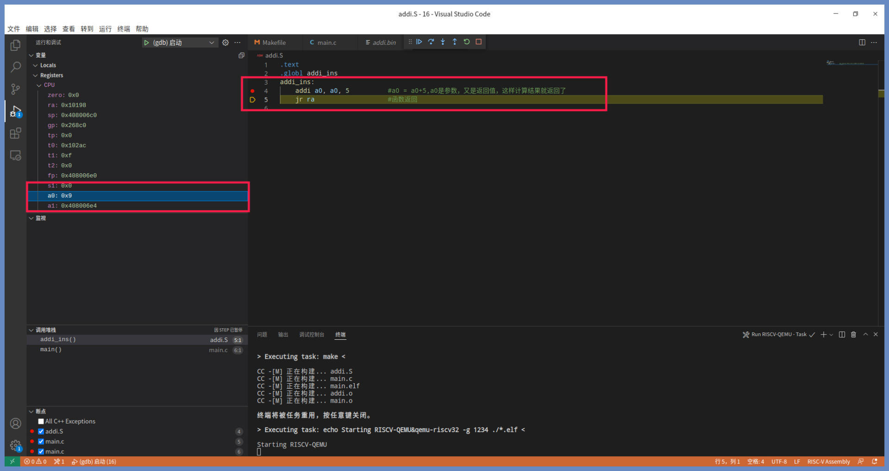
上图中是程序刚刚执行完addi a0，a0，5指令之后，执行jr ra指令之前的状态。可以看到a0寄存器中的值已经变成了9，这说明运算的结果是正确的。
addi_ins函数返回后，输出的结果如下图所示：
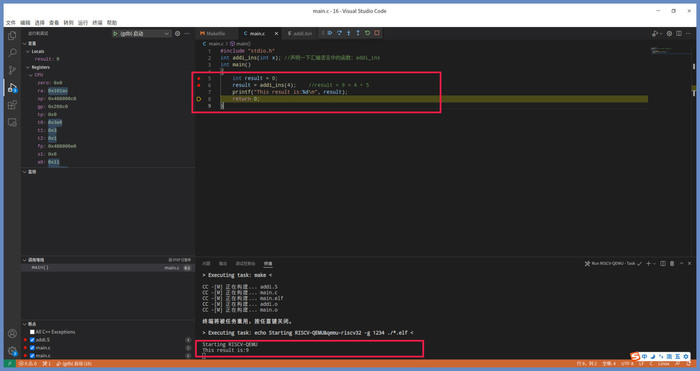
上图的结果已经证明了，addi指令完成的功能和执行的结果符合我们的预期。
我们趁热打铁，在addi.S文件中再写一个函数，也就是addi_ins2函数，代码如下所示：
.globl addi_ins2
addi_ins2:
addi a0，a0，-2048 #a0 = a0-2048，a0是参数，又是返回值，这样计算结果就返回了
jr ra #函数返回
addi_ins2函数的指令和addi_ins函数一样，只不过立即数变成了负数。我们很清楚所谓减法就是加上一个负数，所以通过addi_ins2函数就实现了立即数减法指令。
同样地，我们在main函数中调用它，代码如下所示：
#include "stdio.h"
int addi_ins(int x); //声明一下汇编语言中的函数：addi_ins
int addi_ins2(int x); //声明一下汇编语言中的函数：addi_ins2
int main()
{
int result = 0;
result = addi_ins(4); //result = 9 = 4 + 5
printf("This result is:%d\n", result);
result = addi_ins2(2048); //result = 0 = 2048 - 2048
printf("This result is:%d\n", result);
return 0;
}
接着我们再按下“F5”键调试一下，第二个printf输出的结果为0，因为2048-2048 肯定等于0。如下所示：
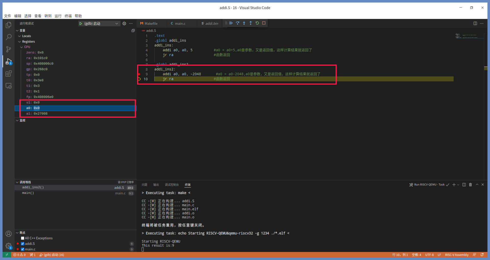
和之前一样，上图中是刚刚执行完addi a0，a0，-2048指令之后，执行jr ra指令之前的状态。这时a0寄存器中的值已经变成了0，这说明运算的结果正确。
addi_ins2函数返回后，输出的结果如下图所示：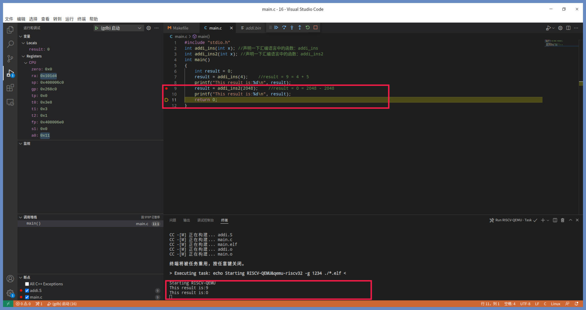
上图中已经证明了结果符合我们的预期，用addi指令完成了立即数的减法计算。这也是RISC-V指令集中没有立即数据减法指令的原因。为了保证这一特性，所有的立即数必须总是进行符号扩展，这样就可以用立即数表示负数，所以我们并不需要一个立即数版本的减法指令。
最后，为了进一步搞清楚这条指令的机器码数据，我们一起看看addi_ins函数和addi_ins2函数的二进制数据什么样。
让我们打开工程目录下的addi.bin文件，如下所示：
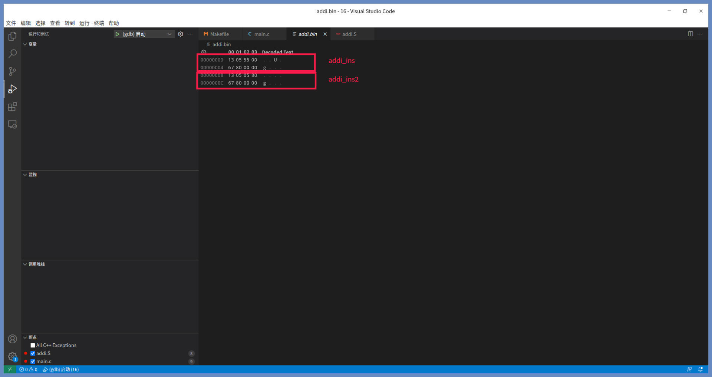
以上是四条指令数据，其中两个0x00008067数据为两个函数的返回指令，即：jr ra，0x00550513，它对应的汇编语句addi a0，a0，5，0x80050513，对应汇编语句addi a0，a0，-2048。
第五节课我们总体了解过RISC-V的指令格式，这里我们一起来详细拆分一下addi指令的各位段的数据，看看它是如何编码的。
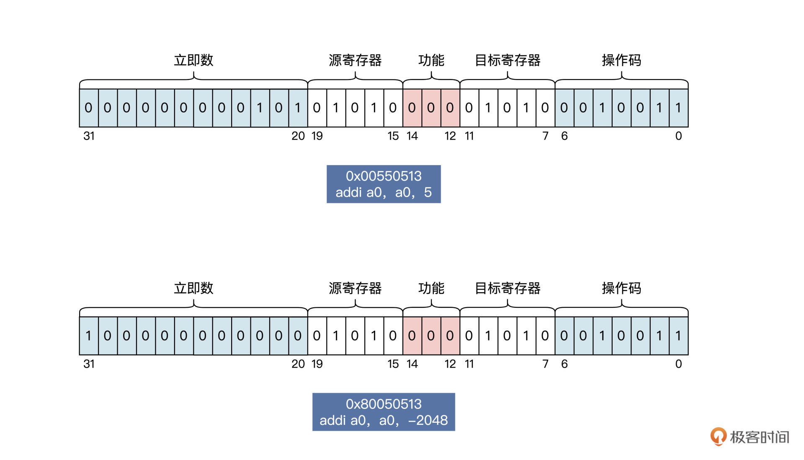
对照上图，我们可以看到一条指令数据为32位，其中操作码占7位，目标寄存器和或者源寄存器各占5位。通过5位二进制数，正好可以编码32个通用寄存器。上图中寄存器编码对应10，正好是x10，也即a0寄存器，立即数占12位。由于RISC-V指令总是按有符号数编码，所以立即数只能表示-2048~2047的范围。
寄存器版本的加减法如何实现
立即数的加减法已经搞定了，下面我们来看看寄存器版本的加减法如何实现。
寄存器版本的加法指令的形式如下：
add rd，rs1，rs2
#add 加法指令
#rd 目标寄存器
#rs1 源寄存器1
#rs2 源寄存器2
类似立即数加法指令，寄存器版本的加法指令也是两个源寄存器相加，结果放在目标寄存器中，代码中rd、rs1、rs2可以是任何通用寄存器，计算操作也和前面addi指令一样。
还是通过写代码来做个验证，我们写一个addsub.S文件，并在其中用汇编写上add_ins函数 ，如下所示：
add_ins:
add a0，a0，a1 #a0 = a0+a1，a0、a1是C语言调用者传递的参数，a0是返回值，这样计算结果就返回了
jr ra #函数返回
a0，a1是C语言函数调用的第一、二个参数，如果你想不明白，可以回顾一下之前我们讲的函数调用规范。
这里我们用VSCode打开工程目录，按下“F5”键调试一下，输出的结果为2，因为1+1的结果肯定等于2。
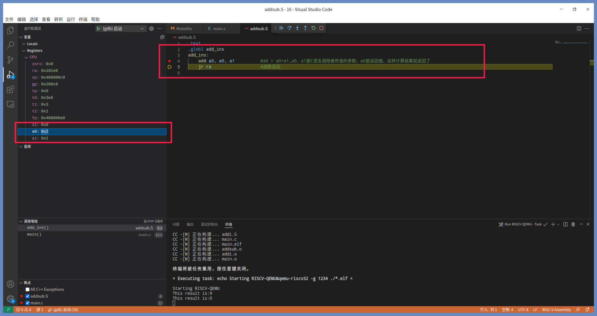
上图展示的是执行完add a0，a0，a1指令之后，执行jr ra指令之前的状态。这时a0寄存器中的值确实已经变成了2，这说明运算的结果正确。
当add_ins函数返回后，输出的结果如下图所示：
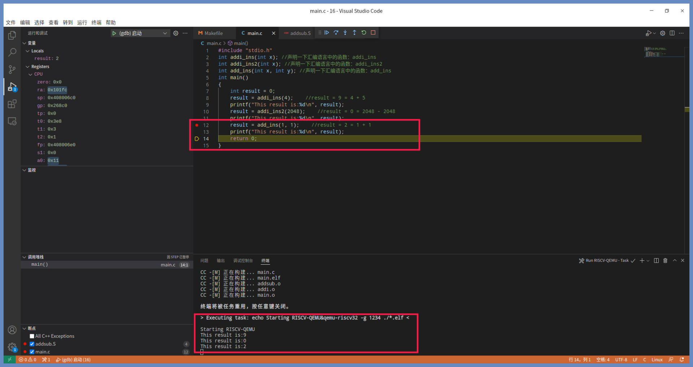
这个结果证明了add指令执行的结果符合我们的预期。
好，我们加点速，一鼓作气把减法指令也拿下。在addsub.S文件中再写一个函数，也就是sub_ins函数，代码如下：
sub_ins:
sub a0，a0，a1 #a0 = a0-a1，a0、a1是C语言调用者传递的参数，a0是返回值，这样计算结果就返回了
jr ra #函数返回
这段代码就是减法指令，和加法指令的模式一样，除了助记符是sub，实现的操作是a0 = a0 - a1。sub指令后的目标寄存器、源寄存器可以是任何通用寄存器。- 我们按下“F5”键调试一下，其结果应为1，如下所示：
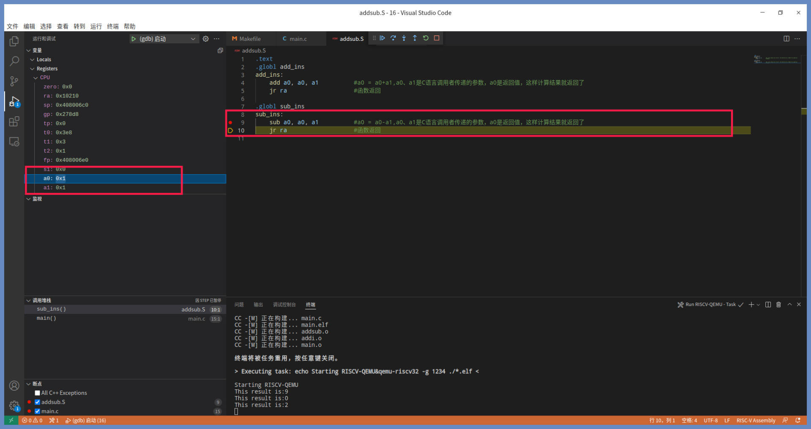
上图中依然是执行完sub a0，a0，a1指令之后，执行jr ra指令之前的状态。这时a0寄存器中的值确实已经变成1了，证明运算结果没问题。
当sub_ins函数返回后，就会输出下图所示的结果。
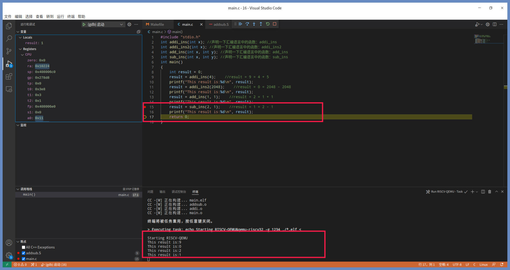
经过调试，sub指令执行的结果也符合我们的预期了。
下面我们继续研究机器编码，来看看add_ins函数和sub_ins函数的二进制数据。打开工程目录下的addsub.bin文件，如下所示：
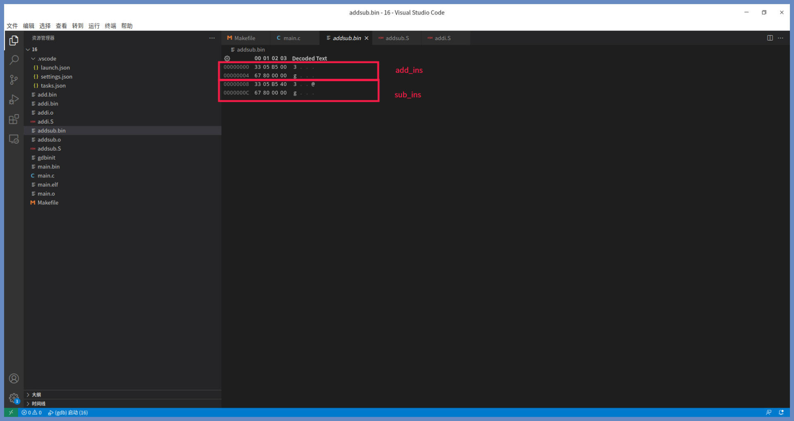
以上4个32位数据是四条指令，其中两个0x00008067数据是两个函数的返回指令即：jr ra，0x00b50533为add a0，a0，a1，0x40b50533为sub a0，a0，a1。
我们还是来拆分一下add、sub指令的各位段的数据，看看它们是如何编码的。如下所示：
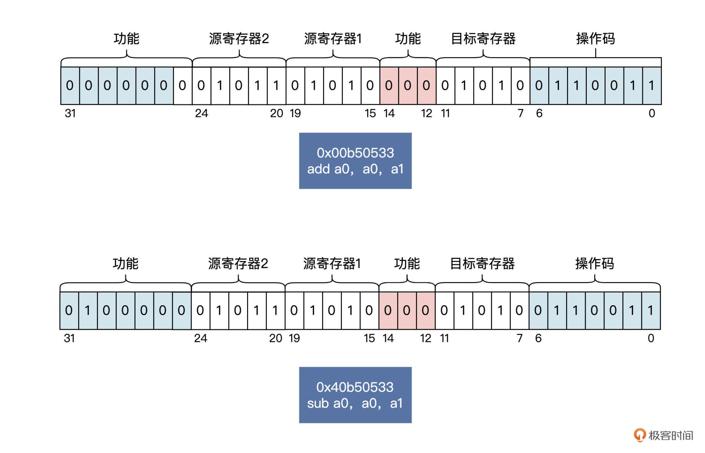
从图里可以看到，操作码占了7位，目标寄存器和两个源寄存器它们各占5位。目标寄存器和源寄存器编码对应10，正好是x10，即a0寄存器。而源寄存器2编码对应11，正好是x11也即是a1。其它位段为功能编码，add、sub指令就是用高段的功能码区分的。
比较指令
加减指令我们就讲到这里，不过光能计算加减还不够，接下来我们看看比较指令。现在大多数处理器都会包含数据比较指令，用于判断数值大小，以便做进一步的处理。
有无符号立即数版本：slti、sltiu指令
RISC-V指令集中有四条比较指令，这四条又分为有无符号立即数版本和有无符号寄存器版本，分别是slti、sltiu、slt、sltu。
slti、sltiu指令的形式如下所示：
slti rd，rs1，imm
#slti 有符号立即数比较指令
#rd 目标寄存器
#rs1 源寄存器1（有符号数据）
#imm 有符号立即数(-2048~2047)
sltiu rd，rs1，imm
#sltiu 无符号立即数比较指令
#rd 目标寄存器
#rs1 源寄存器1（无符号数据）
#imm 有符号立即数(-2048~2047)
上述代码中rd、rs1可以是任何通用寄存器。有、无符号是指rs1寄存器中的数据，有符号立即数imm的数值范围是-2048~2047。
slti、sltiu完成的操作用伪代码描述如下：
if(rs1 < imm)
rd = 1;
else
rd = 0;
下一步又到了写代码验证的环节。我们建立一个slti.S文件，在其中用汇编写上slti_ins、sltiu_ins函数，然后写下这两个函数：
.global slti_ins
slti_ins:
slti a0, a0, -2048 #if(a0<-2048) a0=1 else a0=0，a0是参数，又是返回值，这样计算结果就返回了
jr ra #函数返回
.global sltiu_ins
sltiu_ins:
sltiu a0，a0，2047 #if(a0<2047) a0=1 else a0=0，a0是参数，又是返回值，这样计算结果就返回了
jr ra #函数返回
slti_ins与sltiu_ins函数我已经帮你写好了，分别执行了slti和sltiu指令，都是拿a0寄存器和一个立即数比较，如果a0小于立即数就把1写入a0寄存器。
下面我们在C语言的main函数中调用它，然后打印一下结果，用VSCode打开工程，按“F5”调试后的效果如图：
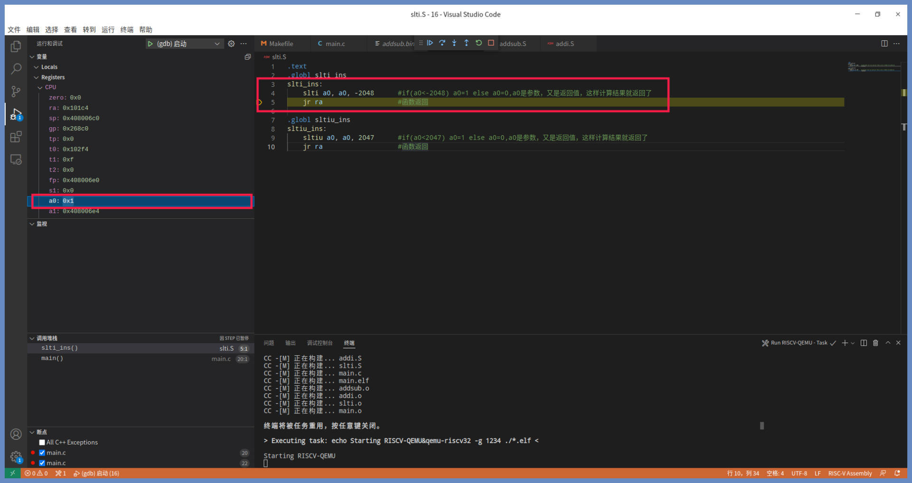
上图中是执行完slti a0，a0，-2048指令之后，执行jr ra指令之前的状态。如果看到a0寄存器中的值确实已经变成1了，就说明运算的结果是正确的。
当slti_ins函数返回后，输出的结果如下所示：
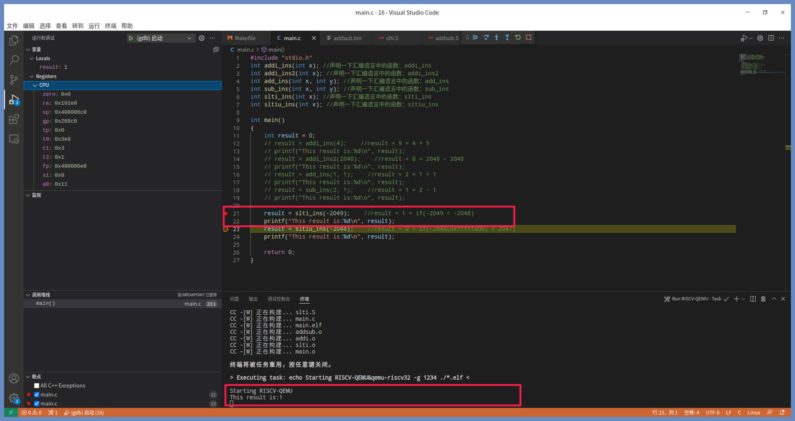
因为-2049比-2048确实要小，所以返回1，这证明结果是正确的。
sltiu_ins函数的调试方法也差不多。你不妨对照后面的图看一下。
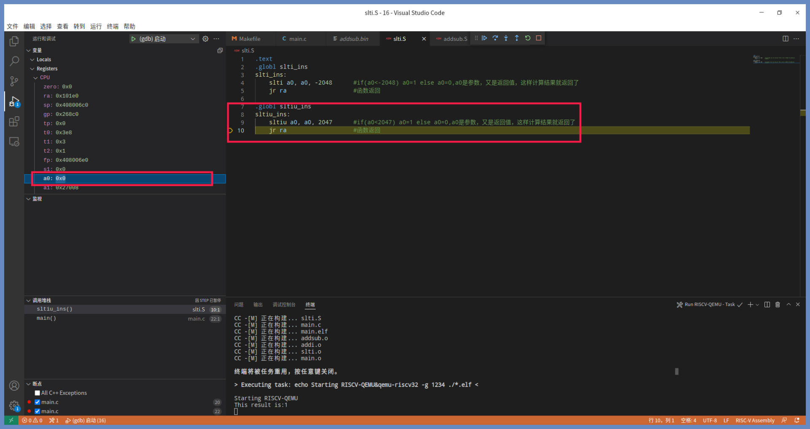
上图中依然是执行完sltiu a0，a0，2047指令之后，执行jr ra指令之前的状态，我们已经看到a0寄存器中的值变成0了，这说明a0的数据不小于2047。
当sltiu_ins函数返回后，输出的结果如下：
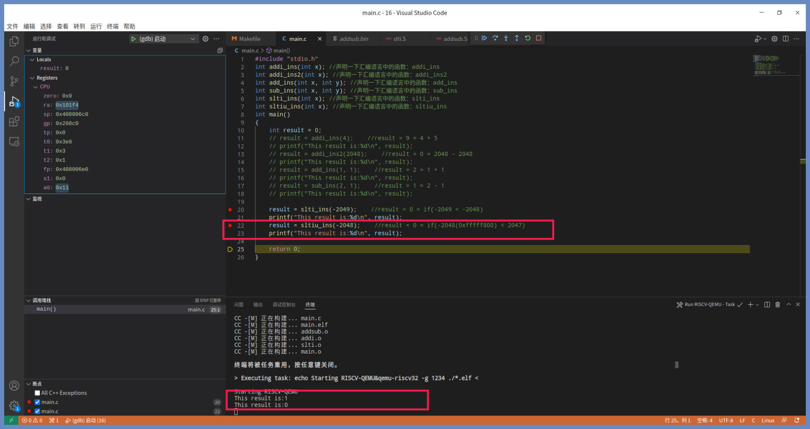
图里输出的结果0，这和执行完sltiu指令后a0的值是一致的。看到这可能你就有疑问了，传递的参数是-2048，它应该远小于2047，为什么输出结果不是1呢？
别忘了sltiu指令的属性，它是无符号的比较指令，也就是说sltiu指令看到的数据是无符号的，
而-2048数据编码为0xfffff800，如果把这个数据当成无符号数，则远大于2047，所以返回0。
有无符号寄存器版本：slt、sltu指令
接着我们再来看看slt、sltu指令，这是寄存器与寄存器的有无符号比较指令，它们的形式如下所示。
slt rd，rs1，rs2
#slt 有符号比较指令
#rd 目标寄存器
#rs1 源寄存器1（有符号数据）
#rs2 源寄存器2（有符号数据）
sltu rd，rs1，rs2
#sltu 无符号比较指令
#rd 目标寄存器
#rs1 源寄存器1（无符号数据）
#rs2 源寄存器2（无符号数据）
上述代码中rd、rs1、rs2可以是任何通用寄存器。有、无符号同样代表rs1、rs2寄存器中的数据。
我们先看看slt、sltu这两个指令完成的操作，用伪代码怎么描述：
if(rs1 < rs2)
rd = 1;
else
rd = 0;
我们依然在slti.S文件中用汇编写上slt_ins、sltu_ins函数 ，如下所示：
.globl slt_ins
slt_ins:
slt a0, a0, a1 #if(a0<a1) a0=1 else a0=0，a0，a1是参数，a0是返回值，这样计算结果就返回了
jr ra #函数返回
.globl sltu_ins
sltu_ins:
sltu a0, a0, a1 #if(a0<a1) a0=1 else a0=0，a0，a1是参数，a0是返回值，这样计算结果就返回了
jr ra #函数返回
这里已经写好了slt_ins与sltu_ins函数，分别是执行slt和sltu指令，都是拿a0寄存器和a1寄存器比较，如果a0小于a1寄存器，就把1写入到a0寄存器，否则写入0到a0寄存器。
接下来的调试环节你应该很熟悉了。VSCode当中按F5调试的效果如下：
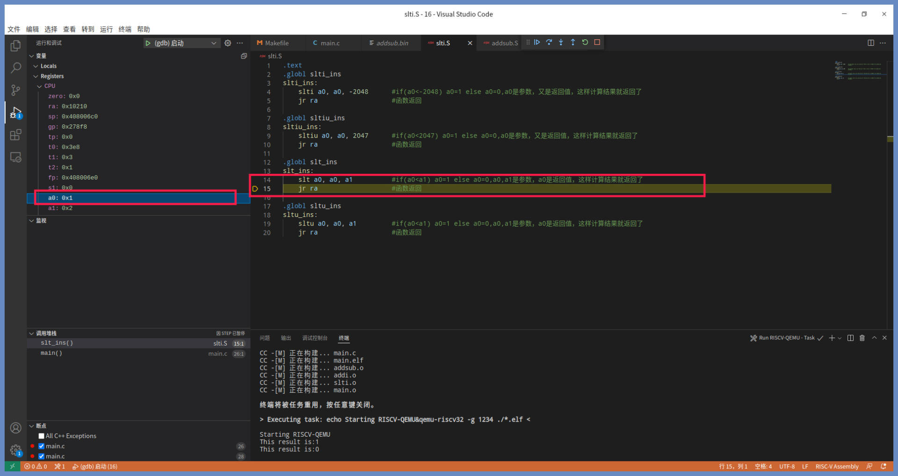
上图中是执行完slt a0，a0，a1指令之后，执行jr ra指令之前的状态。对照截图可以看到，执行指令之后，a0寄存器中的值确实已经变成1了，这说明比较运算的结果是正确的。
当slt_ins函数返回后，输出的结果如下：
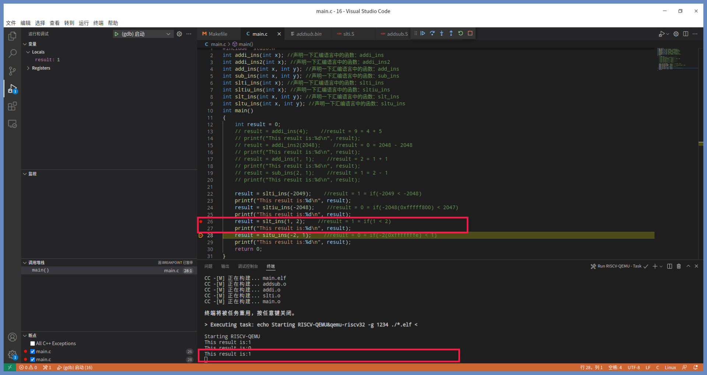
因为1确实小于2，所以结果返回1，通过调试表明运算结果是正确的。
sltu_ins函数的调试我们也如法炮制。
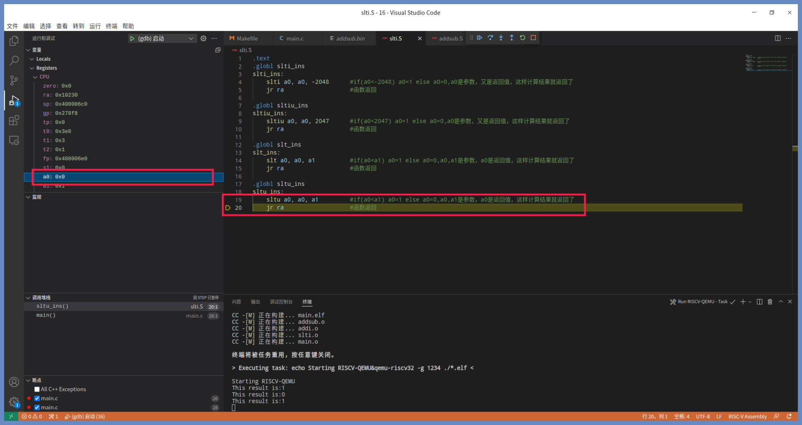
上图是执行完sltu a0，a0，a1指令之后，执行jr ra指令之前的状态。如果我们看到a0寄存器中的值变成0，就说明a0的数据不小于a1。
当sltu_ins函数返回后，输出的结果如下：
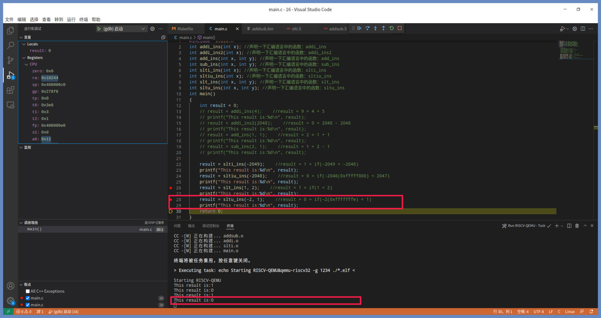
是不是有点困惑？结果是0，可是传递的参数是-2和1，-2应该小于1啊？出现这个结果，是因为sltu指令所看到a0中的数据（-2），是无符号的。而-2的数据编码为0xfffffffe，由于它是无符号数，所以远大于1，返回0才是正确的。
调试工作告一段落，接下来我们再研究一下slti_ins、sltiu_ins、slt_ins、sltu_ins函数的二进制数据。打开工程目录下slti.bin文件，如下所示：
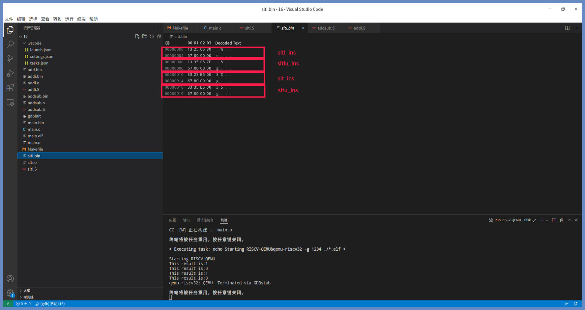
以上8个32位数据是八条指令，其中四个0x00008067数据是四个函数的返回指令即：jr ra，0x80052513为slti a0，a0，-2048，0x7ff53513为sltiu a0，a0，2047，0x00b52533为slt a0，a0，a1，0x00b53533为sltu a0，a0，a1。
同样地，我们也来拆分一下slti、sltiu、slt、sltu指令的各位段的数据，看看它们是如何编码的。
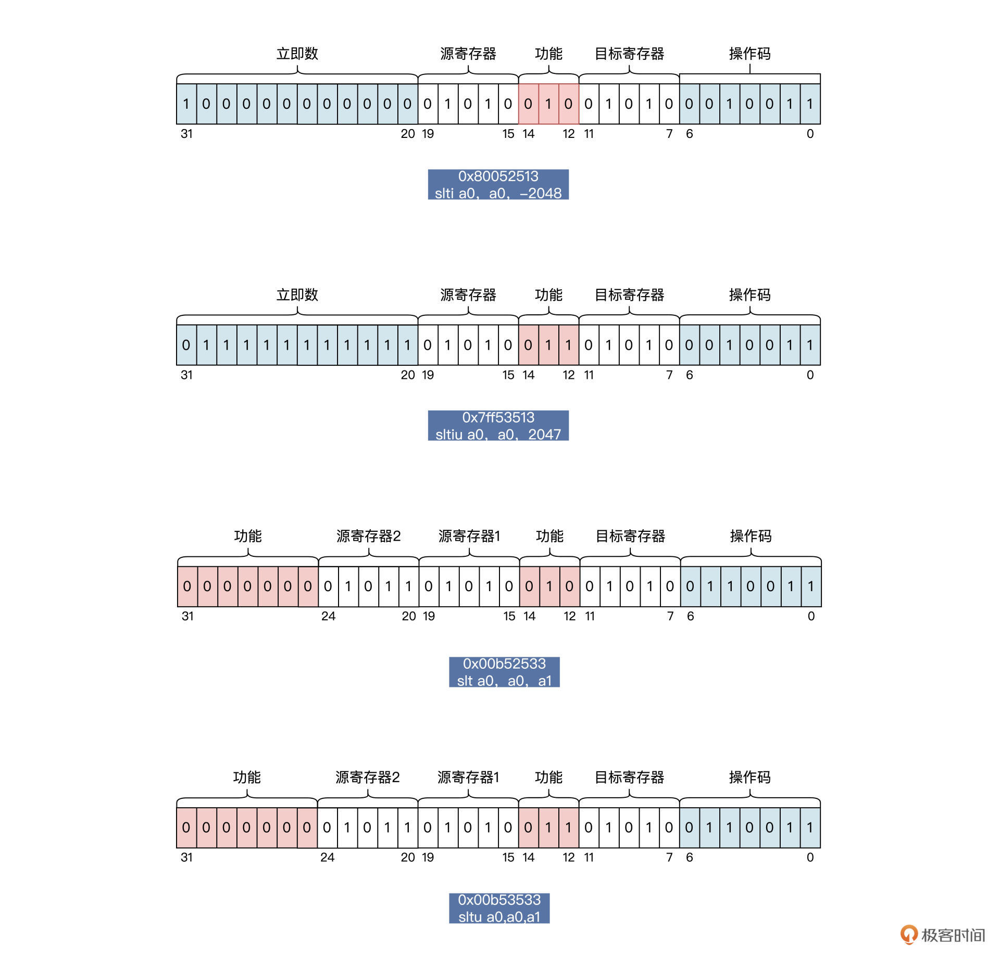
从上图可以发现，立即数版本和寄存器版本的指令格式不一样，操作码也不一样，而它们之间的有无符号是靠功能位段来区分的，而立即数位段和源寄存器与目标寄存器位段，和之前的指令是相同的。
到这里，四条比较指令我们就全部讲完了。建议你自己课后跟着课程练练手，加深印象。
重点回顾
这节课我们一起学习了加减指令和比较指令，让我们一起来回顾一下。
加减指令是CPU里最基本的指令。addi、add、sub这三条指令能对数据和寄存器进行加减运算，可以先把数据装入寄存器中，然后对寄存器与寄存器执行加减操作，也可以寄存器和立即数进行加减操作。
接着我们还学习了比较指令，比较指令能对数据进行比较操作，一共包括四条指令。按照有无符号立即数版本和有无符号寄存器版本划分，分别是slti、sltiu、slt、sltu。这个有无符号是对应操作数中的寄存器的数据，立即数永远是有符号数据。
加减指令主要用于加减法运算，比较指令用于对数据比较，判断数值大小，再结合后面要学的跳转指令就可以实现if-else语句了。
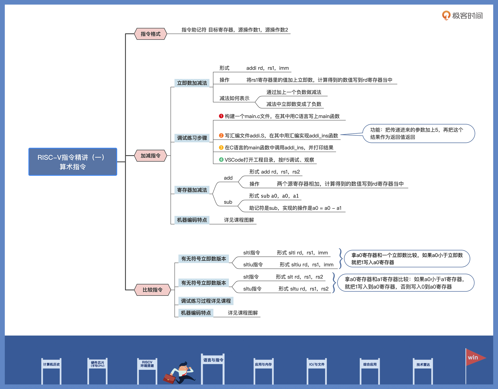
下节课我们继续学习逻辑指令和移位指令，敬请期待。
思考题
请写出机器码0x00000033对应的指令。
欢迎把你的思考和想法分享在留言区。如果这节课对你有帮助，别忘了分享给身边的朋友，邀他一起学习。
© 2019 - 2023 Liangliang Lee. Powered by gin and hexo-theme-book.